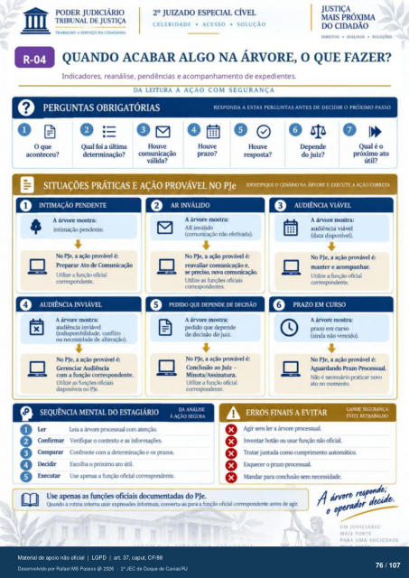

Transcrição automática em português, ainda não revisada. Confira grafia, prazos e termos jurídicos na imagem e no PDF antes de utilizar.
TRASAI.HO A SERVIÇO DA CIDADANIA
CELERIDADE • ACESSO • SOLUÇÃO
DlRtrT0s • DIÁLOGO • sotucôts
QUANDO ACABAR ALGO NA ÁRVORE, O QUE FAZER?
Indicadores, reanálise, pendências e acompanhamento de expedientes.
DA LEITURA A AÇAO COM SEGURANÇA
PERGUNTAS OBRIGATÓRIAS
RESPONDA A ESTAS PERGUNTAS ANTES DE DECIDIR O PRÓXIMO PASSO
OÜO@ O que
aconteceu? Qual foi a última
determinação? comunicação válida?
prazo? do juiz?
Qual é o próximo ato
útil?
SITUAÇÕES PRÁTICAS E AÇÃO PROVÁVEL NO PJ
rrm'TIFIQUE O CENÁRIO NA ÁRVORE E EXECUTE A AÇÃO CORRETA
AUDIÊNCIA VIÁVEL
3
INTIMAÇÃO PENDENTE
1 A árvore mcstra.•
intimação NO PJe, a Fovável é:
Preparar Ato Comunicação Utilize a função oficial
AUDIÊNCIA INVIÁVEL
4
AR INVÁLIDO
2 A árvore mcBtra:
AR inválido 5
não efetivxia). NO PJe, a provável é:
reavaliar comunicação e, preci*), r»va
Utilize as oficiais corresr»ndentes.
PEDIIX) QUE DEPENDE DE DECISÃO
A árvore tnostra: Fdido que devy•nde
de decisão do juiz. No "e, a ação provável é:
Conclusão ao Juiz — Minuta/Assinatura.
Utilize a oficial 6
x A árvore mostra:
audiência inviável (indisvx»nibilidade, conflito
ou n«-essidade de alteração). No PJe, a ação provável é:
Gerenciar Audiência com a função corresvxmdente.
Utilize as oficiais dispniveis no PJe.
A árvore n•KStra: audiência viável
(data dispnivel). NO PJe, a ação provável é:
manter e acompnhar. Utilize a funçào oficial
correspndente.
PRAZO EM CURSO
A árvore mostra: pru) em curso
(ainda nào vencido). No PJe, a ação provável é:
Aguardaruk) Pram Prtxessual. Não é rvcessário praticar novo
ato mornento.
SEQUÊNCIA MENTAL DO ESTAGIÁRIO
leia a árvt.g•e prrxessual com atençü). Confirmar Verifiqtr 0 contexto e as
DA ANALISE
À ACÁO SEGURA
ERROS FINAIS A EVITAR
Agir sem ler a prcreSAial.
GANHE
FVITF, RETRABALHO
O O
O Comparar Confrontecoma determinação e os prazos O
Ikcidir Escolha o próximo ato útil. O
Executar Use a furüi Oficial cx»rrespndente. Use apenas as funções oficiais documentadas do PJe.
Inventar usar funçü) não Tratar juntada como cumprimento automática
0 prazo Mandar para ccmclusào n«essidade.
Quando a rMina interna usar informais. converta-as para a funçao oficial corregx»ndente antes de agir.
UM JUDICIÁRIO
MAIS
PARA UVA SOCIEDADE
Ver também o infográfico original (página 76)
